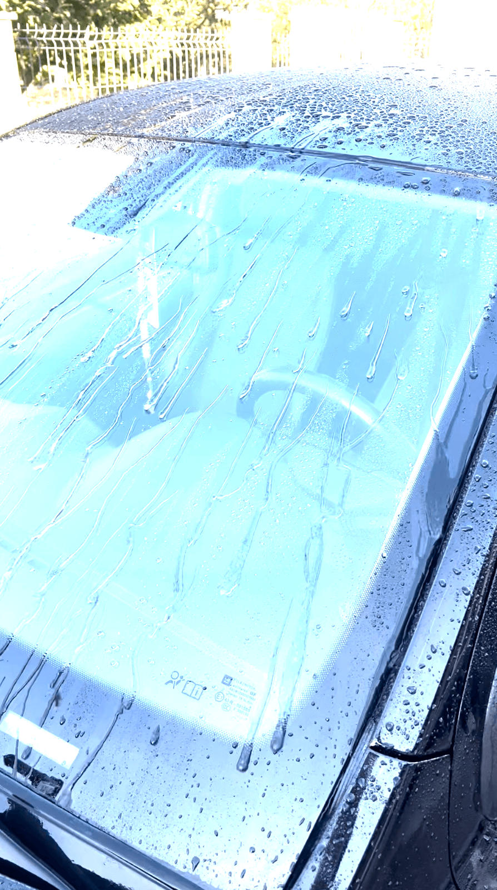
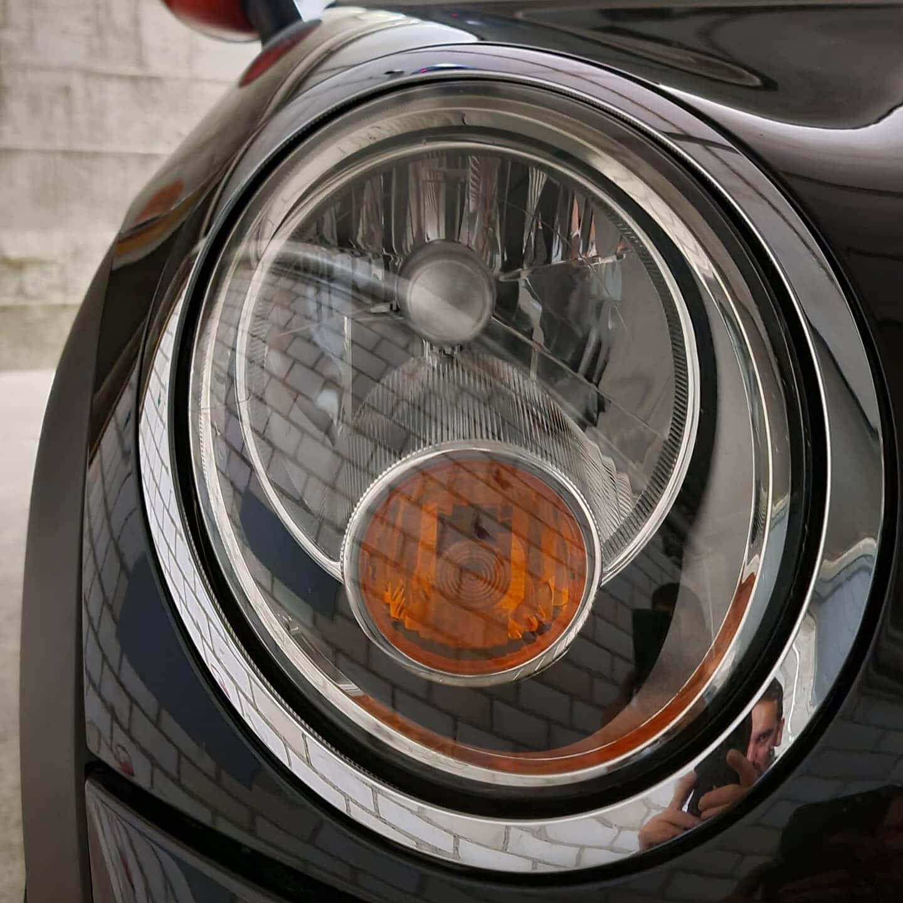
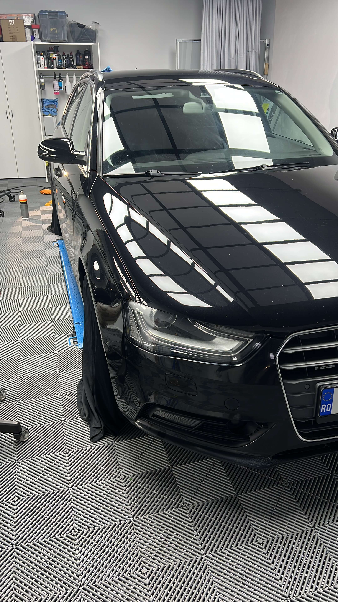

Protecție ceramică, luciu care durează
Un strat ceramic care protejează vopseaua de murdărie, raze UV și contaminanți. Apa perlează, mizeria se prinde mai greu, iar mașina se spală mai ușor.



Ce câștigi cu acest serviciu
Efect hidrofob
Apa perlează și se scurge, luând murdăria cu ea.
Protecție UV
Vopseaua e protejată de soare și de oxidare.
Luciu de durată
Mașina arată proaspăt polisată mult timp.
Între 1 și 5 ani
Durabilitatea depinde de produs și de întreținere.
Cum lucrăm
Protecția ceramică se aplică pe o vopsea corectată, imediat după polisare.
- 1
Polisare
Vopseaua se corectează mai întâi prin polisare, ca stratul ceramic să păstreze un luciu fără defecte.
- 2
Degresare
Mașina se curăță complet cu alcool izopropilic, pentru a elimina orice urmă de uleiuri sau reziduuri.
- 3
Aplicare pe secțiuni
Ceramica se aplică pe secțiuni mici (de exemplu o ușă sau o aripă odată), cu aplicator și lavetă de microfibră. Se lasă între 30 și 60 de secunde, apoi se șterge în mai multe treceri, pentru un strat uniform. Se pot aplica unul sau două straturi, în funcție de produs.
- 4
Întărire
După aplicare, mașina stă într-un spațiu ferit de ploaie minimum 12 ore.


Ce ne întreabă clienții
Cât rezistă protecția ceramică?
Între 1 și 5 ani, în funcție de produsul ales și de întreținere.
Trebuie făcută polisare înainte?
Da. Ceramica se aplică după polisare, altfel ar „sigila” zgârieturile și hologramele existente.
Când pot folosi mașina după aplicare?
Mașina trebuie să stea ferită de ploaie minimum 12 ore după aplicare.
Cât costă?
Prețul depinde de mașină, de starea vopselei (câtă polisare e necesară) și de produsul ales. Scrie-ne pentru o estimare.
Vrei protecție de durată? Hai să vorbim.
Revenim cu o estimare și o dată disponibilă.